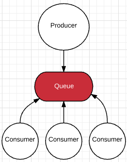
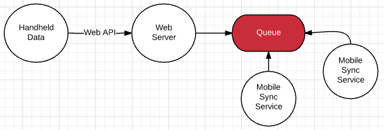

The joy and wonders of:
Queueing
(an intro)Goals?
- Introduce you to Queueing
- Talk about some use cases
- Discuss real world examples
What is Queueing?
The process of putting things in a first in first out process.
Then addressing each of those things in that order.
Pretty simple, right?
Physical World Queueing
Waiting in a checkout line.
Waiting on hold for Comcast.
Waiting to pee at a concert.
Queueing in code
Most languages have a queue data structure
If not - implementing one is dead simple
Can be useful when it helps simplify logic
That's not what we're talking about today
Queueing via Tool/Product
- Similar to the difference in storing data in memory vs database
- The environment now can know about the queue(s)
- You can start to do some powerful stuff
What Kind of Powerful Stuff?
Competing Consumer
Inter-Process Communication
- Decoupling an environment becomes easier
- You can stand up job-specific servers/services
- Fire and forget logic is possible
Redundancy / Resiliency
- A cluster of servers can process messages
- If one goes down the others will still process
- If all go down, the messages will pile up and wait to be handled ... but not lost
Large Processing Jobs
- Create server(s) specific for the job at hand
- Easy to scale those servers up and down
- Easy to scale on a schedule when the load is predictable
Async
- Some languages don't handle threading well
- PHP
Real Uses
TrackAbout Mobile Sync
Logging

Imagine Careers - Job Parsing
Demo